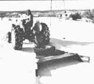
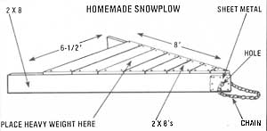

Has a nine-inch snowfall caught you unprepared? Well, if you can't move it out, pack it in with a . . .
As far as I can tell, there's only one guarantee that can be made concerning weather . . . it'll be unpredictable! Winters are particularly bad in this regard . . . from year to year it's next to impossible to know what to expect.
For example, it's not uncommon - on my family's New Mexico homestead - for a whole cold season to pass without our seeing more than a few inches of snow. Then again, there have been years when we've been hit with snowfalls of a foot or more within hours, and - during one cold spell - we were effectively snowbound for almost a month, while three-foot drifts formed across our quarter-mile of driveway.
Since most folks living here can't afford to waste good money buying expensive snowplow attachments for their tractors - especially when such an accessory wouldn't be needed more than once or twice a season - our local inventors have created one of the most efficient homemade wintertime helpers I've ever seen!
The "New Mexican Snowplow", simply nailed together out of scrap 2 X 8's and weighted down with any available heavy object, is dragged behind a tractor or a four-wheel-drive vehicle to smooth and pack the snow. I've found that two or three passes are usually necessary to tamp my driveway down. . . but soon the surface will become hard enough so that the access road can be driven on without tire chains.
By following the accompanying diagram, anyone should be able to construct his or her own snowpacker. You'll find that using the simple device sure beats digging out after every snowfall . . . especially if your driveway is as long as mine!
|
 The homemade snowplow will pack the snow's surface to make driving easier. |
 |
|